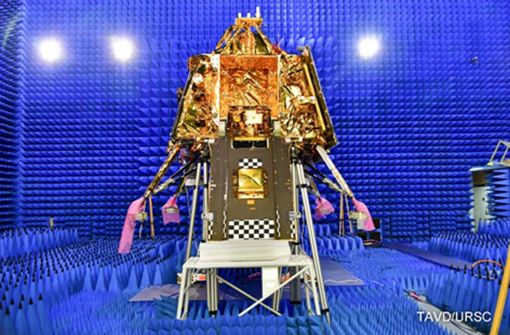

Chandrayaan-3, India's third lunar exploration project, has started its legendary and winding trek to the moon. The robotic lander and rover Chandrayaan-3, which has a propulsion unit as well, was launched early on July 14 from India's Satish Dhawan Space Centre. If everything goes according to schedule, the mission will touch down on the moon on August 23 or August 24. Being the fourth country to soft-land a probe on the moon, following the Soviet Union, the United States, and China, would be a major accomplishment for India.
ISRO divides Chandrayaan-3's roughly 40-day journey to the moon into three distinct segments: the Earth-centric phase, the lunar transfer phase and the moon-centric phase. Phase 1 is now partially over, with the prelaunch and launch and ascent periods completed by liftoff and the separation of Chandrayaan-3 from its rocket. The mission is now in the Earth-bound maneuver stage, which is part of Phase 1. During this chapter, Chandrayaan-3 will make five orbits around Earth. Each time it swings past Earth, the spacecraft will increase its distance from our planet. The final sweep will help place Chandrayaan-3 on a lunar transfer trajectory, sending it moonward during the lunar transfer phase (Phase 2). Chandrayaan-3 will next insert itself into lunar orbit, a move that will kick off the moon-centric phase (Phase 3). The mission will then orbit the moon four times, getting gradually closer to the lunar surface with each subsequent loop. Chandrayaan-3 can't just head straight from an Earth orbit to landing on the moon. When spacecraft return to Earth from space, they have our planet's atmosphere dragging on them and slowing their descent. But the moon has an incredibly wispy atmosphere, so to make a lunar landing, spacecraft have to slow themselves and make a much more gradual approach.
@2023 SpaceQuest
Terms and conditions
Privacy